Washington State Testing Data Issues
Issue number 233
jbkahan opened this issue on April 20, 2020 at 11:33 am
Please have someone look at the Washington state testing data. The data you have is incorrect in both totals and most importantly the history of the data. you can go to https://www.doh.wa.gov/Emergencies/Coronavirus
for the latest data. and/or connect please directly with me offline. johnka@microsoft.com chief data analytics officer, Microsoft / Global AI for Health lead
Hello,
I apologize for the delay in cleaning up the WA numbers. They update them regularly so it is a bit of a chore to keep them current. I have updated the numbers to match as-of 4/25.
From WA: 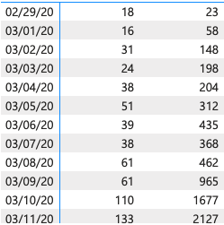 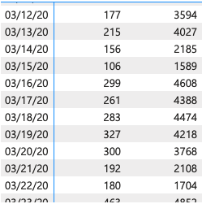 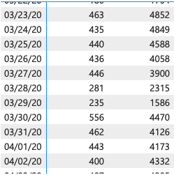 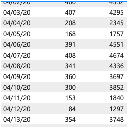 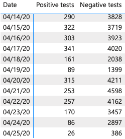 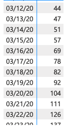 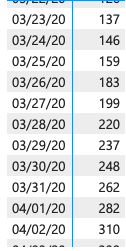 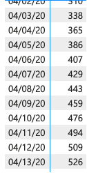 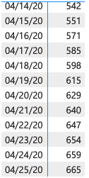 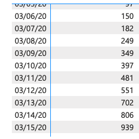 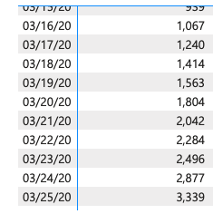 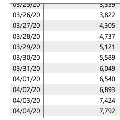 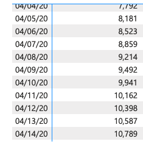 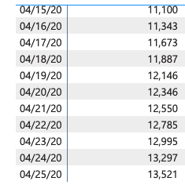
Updated CTP Data: 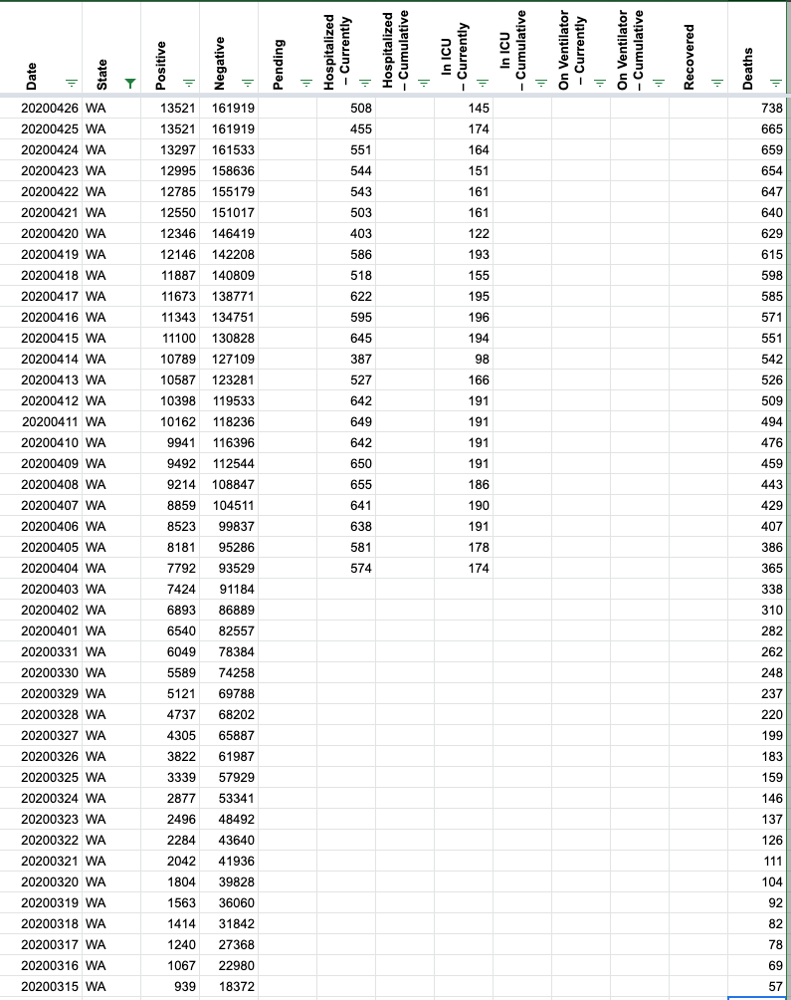
terrific
John Kahan 425-442-2325 https://www.linkedin.com/in/johnkahan/ www.GiveToStopSIDS.orghttp://www.GiveToStopSIDS.org
From: Elliott Klug notifications@github.com Sent: Monday, April 27, 2020 6:55 AM To: COVID19Tracking/issues issues@noreply.github.com Cc: John Kahan johnka@microsoft.com; Author author@noreply.github.com Subject: Re: [COVID19Tracking/issues] Washington State Testing Data Issues (#233)
— You are receiving this because you authored the thread. Reply to this email directly, view it on GitHubhttps://nam06.safelinks.protection.outlook.com/?url=https%3A%2F%2Fgithub.com%2FCOVID19Tracking%2Fissues%2Fissues%2F233%23event-3275898442&data=02|01|johnka%40microsoft.com|3b4883be1fa04d07409f08d7eab29c6c|72f988bf86f141af91ab2d7cd011db47|1|0|637235925160161252&sdata=zECCA73pos%2F5gTnmGzrC%2BrMxwFPdZ4OoQhWR%2Bi8wM7Y%3D&reserved=0, or unsubscribehttps://nam06.safelinks.protection.outlook.com/?url=https%3A%2F%2Fgithub.com%2Fnotifications%2Funsubscribe-auth%2FAPCFZDHILLVRHMFN55WWOD3ROWFEFANCNFSM4MMVNTDA&data=02|01|johnka%40microsoft.com|3b4883be1fa04d07409f08d7eab29c6c|72f988bf86f141af91ab2d7cd011db47|1|0|637235925160171245&sdata=UWnurauvXpb1%2Fm3TFx%2BK5vyAAzKMDBJt4iRSEzuCInA%3D&reserved=0.
I am also seeing problems in WA data.
date | state| pos tests | neg tests 20200414 | WA | 10,538 | 83,391 20200413 | WA | 10,411 | 83,391 20200412 | WA | 10,224 | 83,391 20200411 | WA | 10,224 | 83,391 20200410 | WA | 10,224 | 83,391 20200409 | WA | 9,769 | 83,391 20200408 | WA | 9,506 | 83,391 20200407 | WA | 9,043 | 83,391 20200406 | WA | 8,679 | 83,391
Here’s the most recent official WA state data from their website (transcribe form their graph since their downloadable file censors counties with 5 or fewer cases:
4/14/2020 | 10737 4/13/2020 | 10535 4/12/2020 | 10347 4/11/2020 | 10114 4/10/2020 | 9895 4/9/2020 | 9447 4/8/2020 | 9167 4/7/2020 | 8812 4/6/2020 | 8476
The totals gathered from adding up usafacts.org county level data matches the official WA data more closely.